-=Melbourne=-
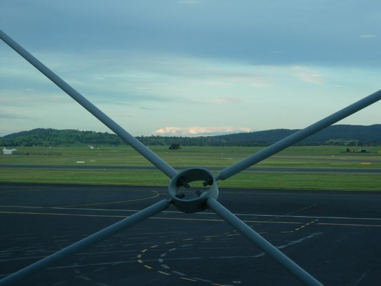
Canberra's one and only runway. .
I backed into this trip. Intended to fly to Melbourne, drive the coast to Adelaide, stay over half-way in a small town (Port Campbell), fly back. When I made the arrangements and added up the expense, it was over $1K before food and lodging. So I backed out everything I could, leaving the original cheap nonrefundable flight to Melbourne. Friends were taking me on a wildlife preserve trip the next day, so this was an overnighter.
Melbourne was a total blast. Did Chinatown, the Art Museum, Italian district, and one of many boho sections, all on foot.
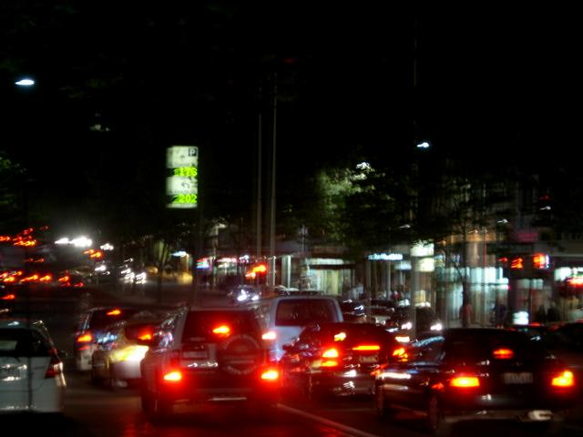
Downtown at 10:30PM. What a shock after Canberra where they roll up the sidewalks at 5:30 (4PM on Sunday). It reminded me of Philly. Kinda weatherbeaten and hunkered down, parking in the center of the street, highlife (my 4-star hotel) and lowlife (Club-X Smut Supermarket--If it's on your mind, it's on our shelves) side by side.
The sign in the center tracks the number of open parking spaces on different streets.
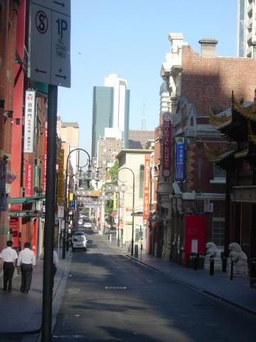
The hotel was in Chinatown. The park on the left has stone lions, a rock garden, graffiti and a dumpster.
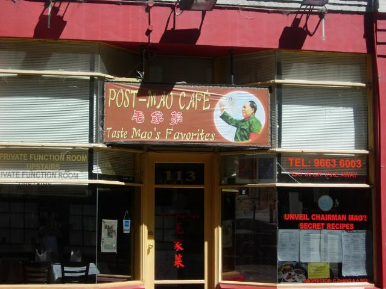
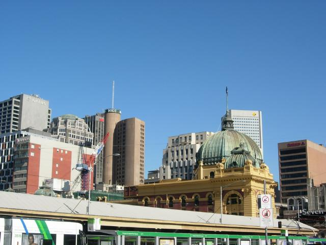
Skyline from the Art Museum.<Heresy>It's better than the British Museum</Heresy> OK, they don't have the Rosetta stone and half the Parthenon, but there was artwork in every room that blew me away. Fell in love with several painters I'd never heard of. Some of whom were modernists--unheard of. The quality was very, very high.
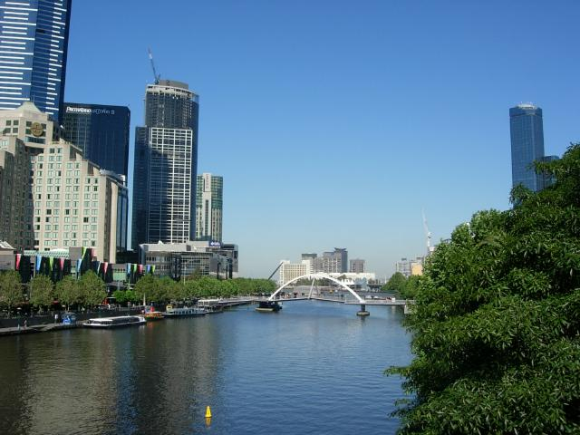
The town is on the Yarra river.
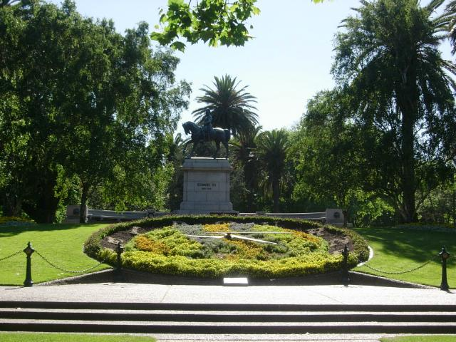
Did Shakespear write about this guy?
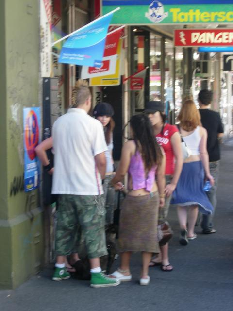
Once you get out of the city center, it's like LA. I was instantly at home. They have people I can relate to: bikers (no photo), punks,
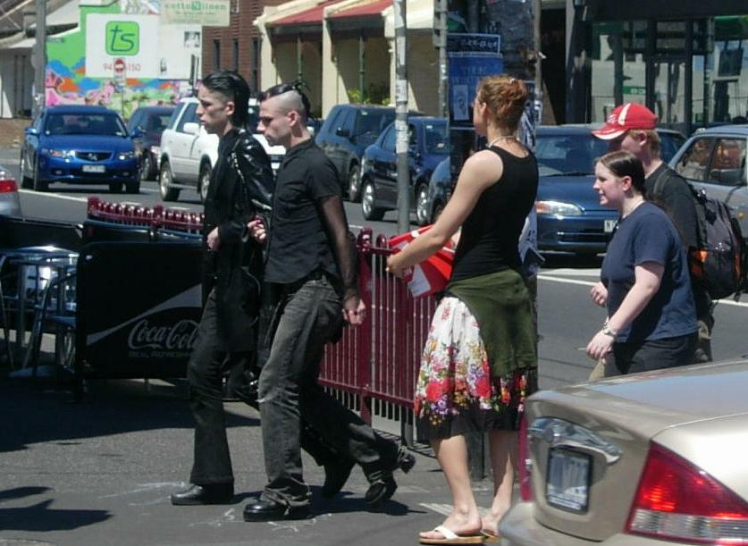
Goths,
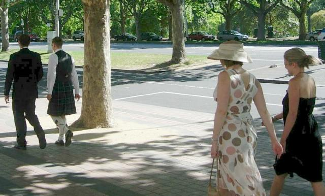
Scottsmen,
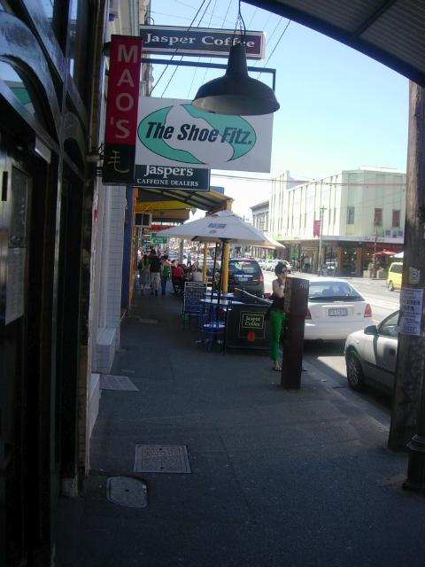
Drug dealers,
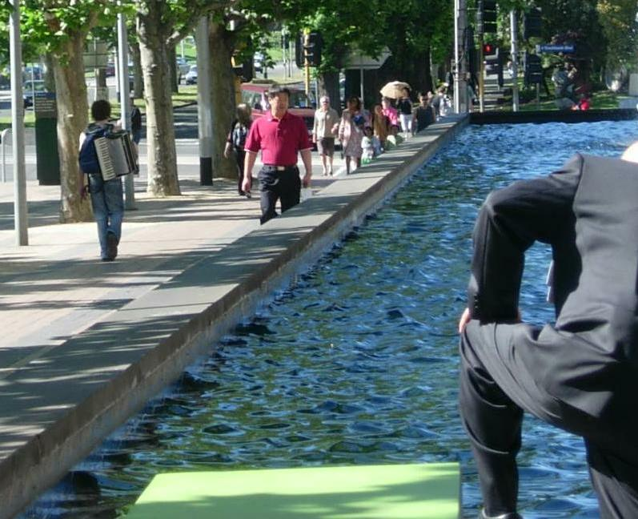
and accordionists.
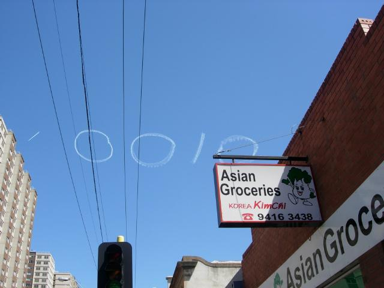
Like the t-shirt says, there are 10 kinds of people: those who understand binary and those who don't.
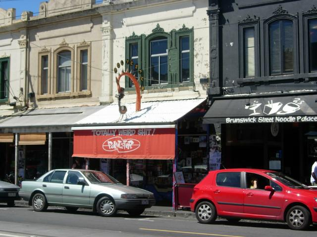
Feeling normal?
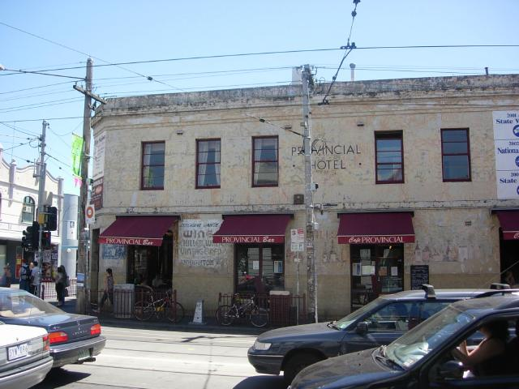
Had lunch at one of the best places in the city (sweet corn and leek soup, crispy snapper with spinach/parsley pesto, friend spaetzele and broad beans)
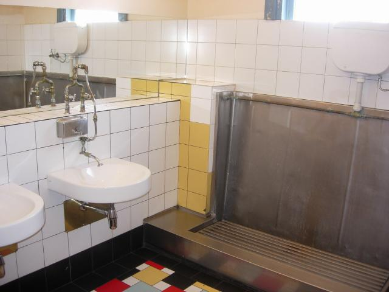
Odd as it looks to American eyes, the Provencial has a typical men's room